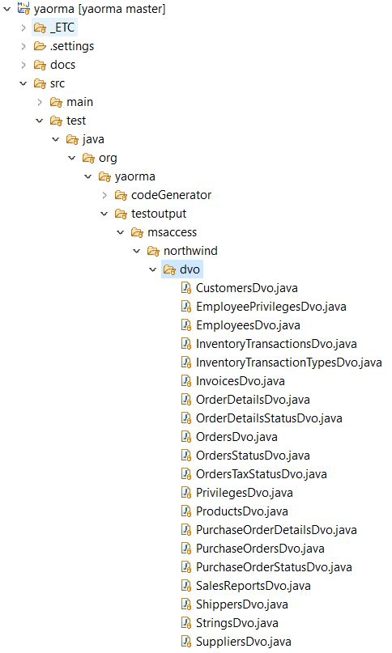

Welcome to the YAORMA project. Yaorma is an extremely streamlined and simple to use Object Relation Mapping tool suite. Yaorma provides a code generator that will generate a one-to-one mapping of relational database tables to Java Data Valu Objects (DVOs). Yaorma also provides tools to connect to a database, execute queries, marshal database data into simple to use data structures, populate the Yaorma DVOs from database query results, and use DVOs to write data to databases.
The Yaorma code generator generates a series of Data Value Objects (DVOs). Each DVO represents a single database table. Each DVO has the exact same fields as the database table. The filed names have been converted to Java naming convention such that MY_COLUMN becomes the field myColumn and getters and setters are created for each field, for example public String getMyField() and public void setMyFiled(String val). Use of the Yaorma code generator is exemplified by the GenerateOrmForSchemaMsAccessIntegrationTest class in the test section of the Yaorma project. Source for this code shows how to generate the set of DVO classes for the Microsoft Access Northwind database that is also included in the resources folder of the test section of this project. When this class is run as an JUnit test it will generate the DVO classes and write them to the correct location in the test section of the application. For this example (and most other examples) we will be using the Microsoft Access version of Yaorma. The Microsoft Access version is used because it is easy to include the Northwind database as a resource in the test section of the application and then connect to that database file using JDBC (i.e. we don't need to execute any DDL to create the database).
package org.yaorma.codeGenerator.impl.msaccess;
import static org.junit.Assert.assertTrue;
import java.io.File;
import java.sql.Connection;
import org.junit.Test;
import org.yaorma.codeGenerator.generateOrmForSchema.GenerateOrmForSchema;
import org.yaorma.testutil.database.MsAccessConnectionUtil;
import org.yaorma.testutil.file.FileUtil;
import lombok.extern.slf4j.Slf4j;
@Slf4j
public class GenerateOrmForSchemaMsAccessIntegrationTest {
private static final String SCHEMA_NAME = "northwind";
private static final String PACKAGE_NAME = "org.yaorma.testoutput.msaccess.northwind.dvo";
private static final File DEST_DIR = FileUtil.getFromProjectRoot("/src/test/java/org/yaorma/testoutput/msaccess/northwind/dvo");
@Test
public void shouldGenerateOrm() {
log.info("Generating DVO objects...");
// remove the existing dvo dir
FileUtil.rmdir(DEST_DIR);
// check that the dest dir was deleted
assertTrue(DEST_DIR.exists() == false);
// get a connection
Connection conn = MsAccessConnectionUtil.getNorthWind();
// generate the dvo objects for the schema
GenerateOrmForSchema.execute(conn, SCHEMA_NAME, PACKAGE_NAME, DEST_DIR, new MsAccessOrmCodeGenerator());
// done
log.info("Done.");
}
}
Examining this code:
When we run this code as a JUnit test the classes shown below are created.

Note, there is a one-to-one relationship to the DVOs created and the database tables in the Northwind Microsoft Access database.